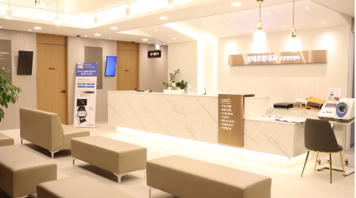
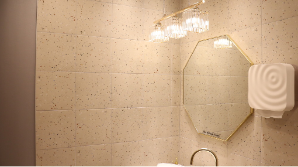

시설과 장비
대학병원급 장비와
최고의 의료진
대학병원급 최신 의료장비
대학병원에서 사용하던 것과 동일한 수준의 장비를 갖추었습니다. 내시경 검사에는 올림푸스 EVIS LUCERA ELITE 시스템을, 영상 진단에는 디지털 엑스레이 장비를 사용하며, 신의료기술을 적시에 도입해 진료의 질을 유지합니다.
최고의 의료진
대학병원 출신 간호사(RN)가 함께 근무하여, 검진과 시술 전 과정에서 안전하고 수준 높은 관리를 제공합니다.
깨끗하고 안전한 시설
밝고 깔끔한 내부 시설을 항상 청결하게 유지합니다. 검사 장비는 매번 소독하고 일회용 소모품을 사용해 위생 관리를 최우선으로 합니다.